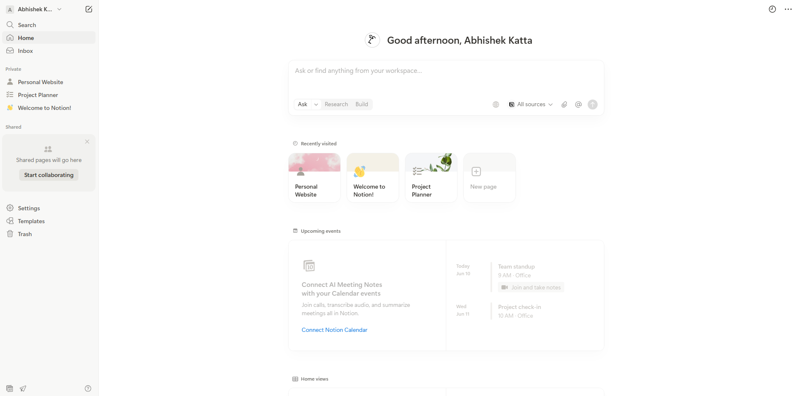
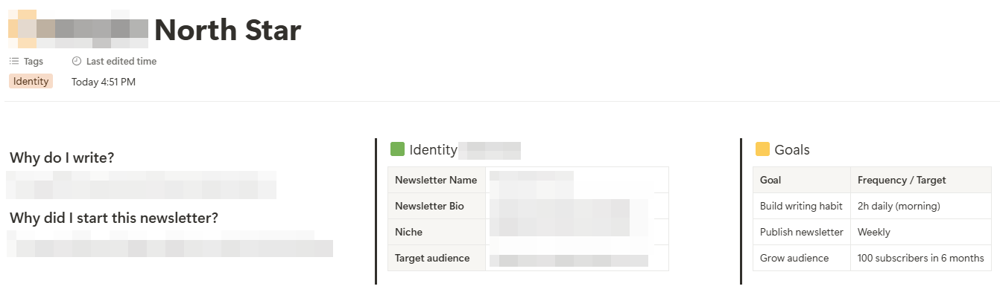
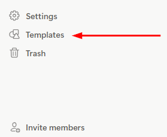
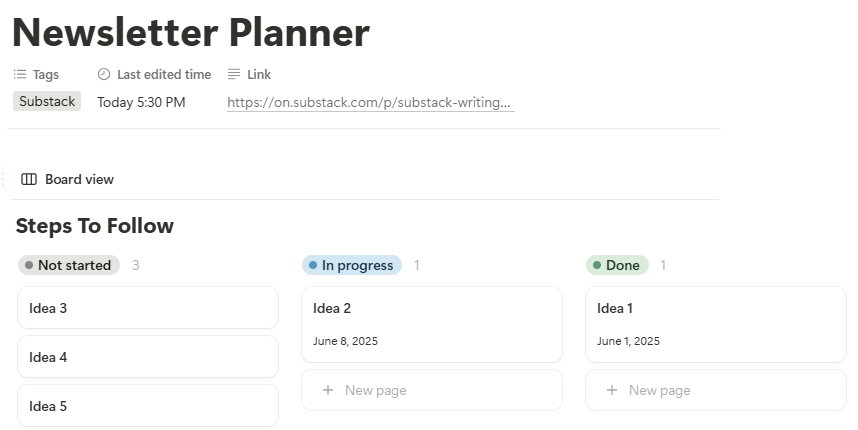
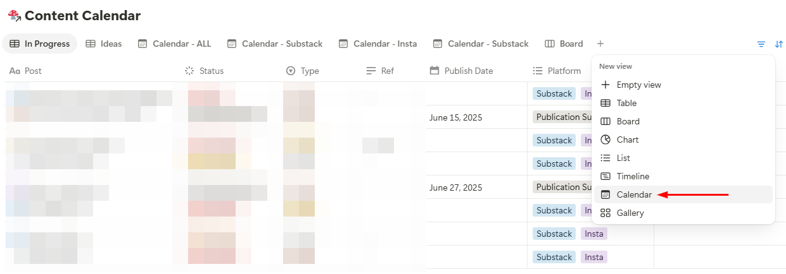
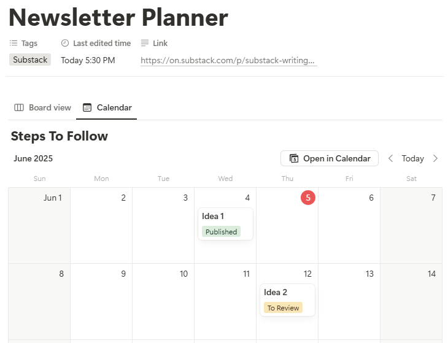

How to Manage your Newsletter on Notion
Overview
Whether you’re a writer or content creator, you can manage every step of your newsletter creation process on Notion.
This guide covers:
- What is Notion?
- Setting Up Your Writer Profile and Goals
- Capturing and Organizing Ideas
- Building a Repeatable Writing Process
- Managing a Content Calendar
1. What is Notion?
Notion is a productivity platform that integrates note-taking, planning and task management, into a single customizable interface.
Figure 1: Example homepage on Notion workspace.

2. Setting Up Your Writer Profile and Goals
Define your writing goals and identity for your newsletter on your north star page.
First, answer the following questions:
- Why are you writing this newsletter?
- Who is your audience?
- What is your niche?
- What is the goal of your newsletter? What do you want your readers to feel, learn, or take away?
Create a new page to enter this information.
Figure 2: How to create a new page.
Figure 3: Example of north star page with motivation, identity and goals.

3. Capturing and Organizing Ideas
Learn how to capture ideas with ease. When you're ready to work on an idea, convert it into a working draft.
Watch this video to streamline your content creation process:
Your 2-step content creation workflow is now ready.
4. Building a Repeatable Writing Process
Build a sustainable writing habit by using a Kanban board to systemize your content creation process.
Follow these steps:
- Create a new page for Planning.
- Import your preferred Kanban template.
Figure 4: On the sidebar, click on the Templates icon.

- Customize the Kanban with additional metadata such as deadlines or publishing
dates.
Figure 5: Example of planner with status and publication date.

5. Managing a Content Calendar
Set up a calendar to plan and track publishing dates.
Follow these steps to create a calendar view from your Kanban board:
- Next to “board” view on your Newsletter Planner page, click on the “+” button
and select Calendar”.
Figure 6: How to add calendar view.

- View existing tasks with “Publication Date” or “Add New” page to get
started.
Figure 7: Example content calendar view.
